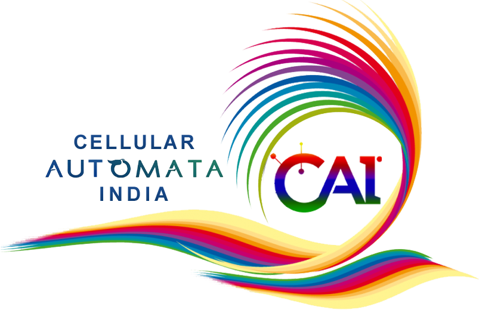
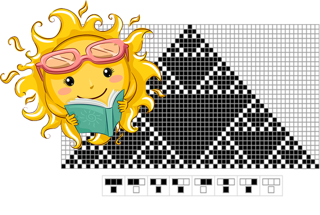

Theory and Applications

Indian Summer School on Cellular Automata is a flagship event of the Cellular Automata India. Its aim is to promote cellular automata research in India, as well as the other part of the world. This is the sixth edition of the summer school. This time the learning phase of the summer school is co-located with a workshop (Workshop on Logic and Automata: Cultivating the Roots of Computing), to be held at IIEST, Shibpur during June 1-5, 2026. Although the learning of cellular automata can be done in online, we encourage the participants to attend the workshop offline for hands on training and offline interaction with the mentors. We are intended to move to offline organisation of summer school.
The Summer School is conducted in two phases.
The learning phase:
The projects: The projects will be prepared by the participants, based on the topics covered in the talks (or related topics). This will be given as an assignment at the beginning, and the participants have to submit the project proposal. A (detailed) discussion will take place between the mentors and participants to finalise the projects. The mentors may insist on some topics during the discussion, if required. For the offline participants, the discussion will take place after the workshop, possibly on Saturday first half. For online participants, such a discussion will take place on Friday. Accordingly, the projects and mentors of the projects will be finalised. Hence, the project will officially start from the next week of the school.
Progress report: At the end of the first one month (last week of June, 2026), the participants have to present the progress of their project work through oral presentation. The participants will have an exit option at this stage. After successful presentation, if anyone wants to exit, s/he will receive a participation certificate.
Final report: The participant will present their complete work at the end of the school. The preferred time is the end of July (or, at the very beginning of August). The participants need to submit a one-page write-up, which is to be endorsed by the respective mentor. Upon successful completion of the presentation, each presenter will be awarded a completion certificate.
Extended phase/ working for paper: This is optional. The mentors will select potential projects for continuing. The participants may need to agree to continue. Those works will be converted to research papers, to be submitted ASCAT 2027 (or to some other venues).
The guidelines for Indian Summer School on Cellular Automata 2026: